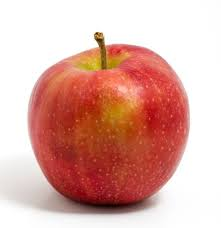
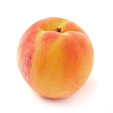

|
Cantareata
Romana,Engleza,Rusa instasamka32@gmail.com +373 666 36 29 |
Instasamka (Instasamka; numele real - Daria Evgenievna Zoteeva; născută la 11 mai 2000, Tobolsk, regiunea Tyumenskaya) - cântăreață pop și artistă rap rusă, tiktoker; mai devreme - instablogger. Este cunoscută pentru imaginea, acțiunile și conținutul ei provocatoare, creând adesea hype în spațiul informațional al Runetei. |

|
 |

|
 |
Experienta de lucru
Manager de Supt
NoNutNovember 2024Managera de supta la boss in fiecare companie IT scoala sau Liceu
Un om sa mai bine zis Venom
Hoata de nota zece + scaun de la bicicletaA furat milionu in preuna cu Maia Sandu ghidata de Putin si Dodon
Hacker-Anonimus
O furat bomboane din banca👇O amejit copii cu o bombona, 13 copii au disparut pana azi
Educatie
Bussines Ladie
A inceput cl I-a si a terminat in a IV-aAre bussines pe stot locul cu dildo dopuri si coltuni
Studii de Masterat
Are documente de Masterat
Are documente de Masterat dar nu a fost acoloA platit pt diplome de gradul III